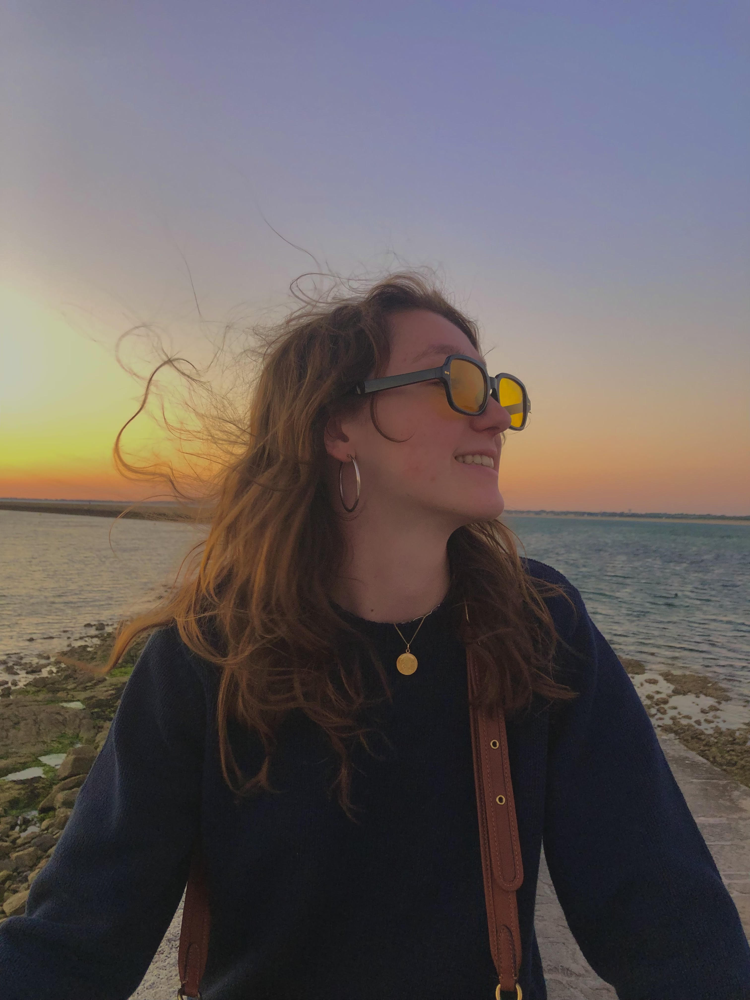
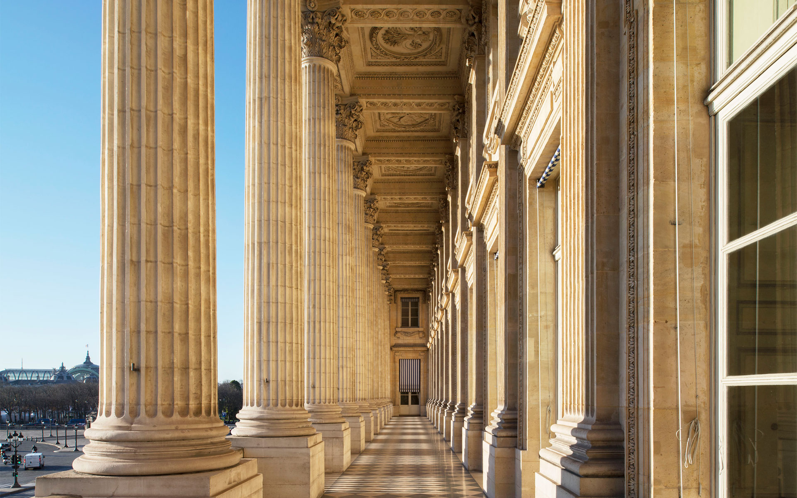
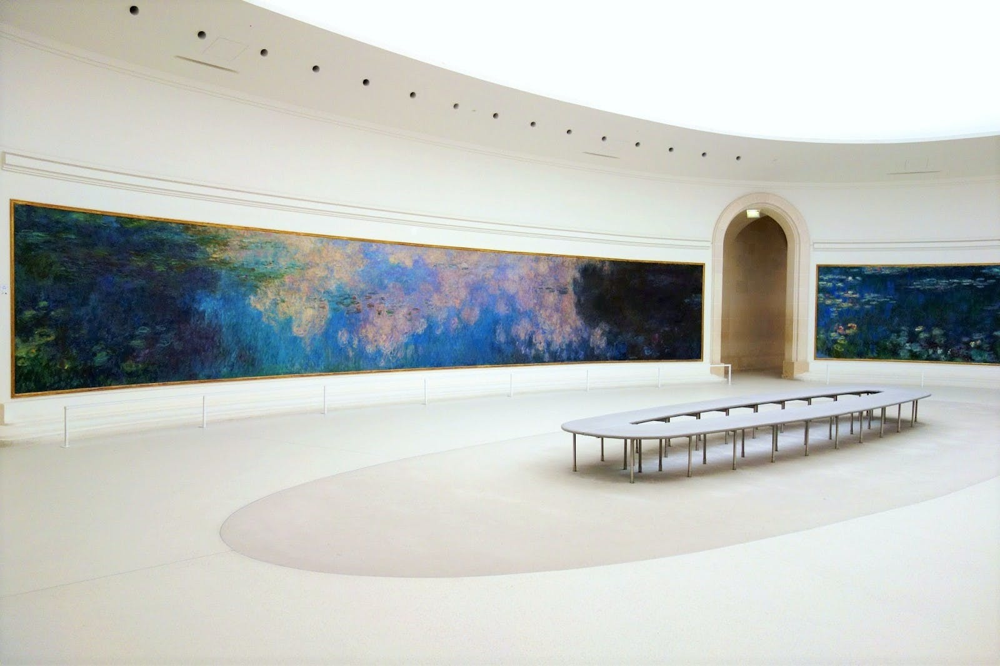
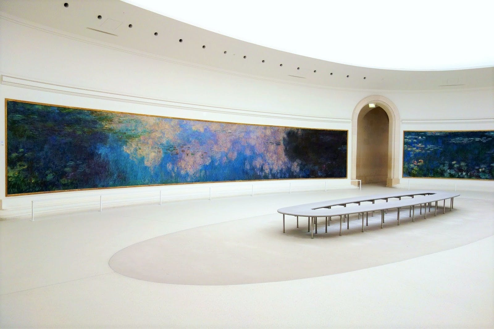

Bonjour et bienvenue sur le profil de Fleur
Je m'appelle Fleur Hédelin et je suis en première année à l'IESEG.
Lien vers mon LinkedinMes centres d'intéret
Je suis passionnée d'Hisoire et d'art. Je suis également intéréssée par le sport car je fais de la danse depuis plus de 12 ans et j'ai pratiqué l'équitation pendant plus de 8ans. Voici trois musées que je vous conseille de visiter à Paris:

Hôtel de la marine
 Musée d'Orsay

Musée de l'Orangerie
Musée d'Orsay

Musée de l'Orangerie
Mon projet professionnel
Mon objectif professionnel est de travailler dans le Luxe. En effet je trouve que chaque maison de couture est unique et exprime à travers ses produits une vision du monde ou un "life style". Le Luxe est en réalité une forme d'art et c'est un art auquel j'aimerai m'intéresser.